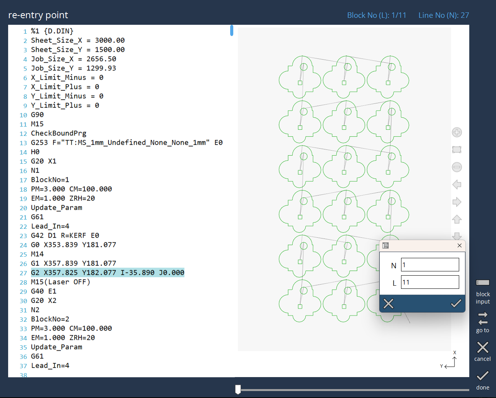

重入
如果您在上次运行中被迫停止了程序，则可通过Vulcan Control重入此表以保存材料。
-
从停止点继续将恢复程序
-
从起点重新启动将启动新的运行
-
取消将返回上一屏幕（不运行程序）
重新进入点允许用户从特定点重新启动中断的程序。用户可以在DIN编辑器中选择特定行或直接选择图纸中的段 或使用*转到*选项。通过程序块输入选项可在程序块输入中手动输入行和程序块编号，或选择段，由此将更新。在所选段内，可用滑块定位点，并从该点执行程序。

在*转到*选项中，用户可以在不同的轮廓或段之间导航。选择点并单击完成后，将激活块搜索模式。当您按下“启动”时，机床将移动到程序重新启动的位置。进入起始位置后， 出现以下消息，“已达到块搜索目标位置。按启动以继续”。现在按“启动”开始加工。